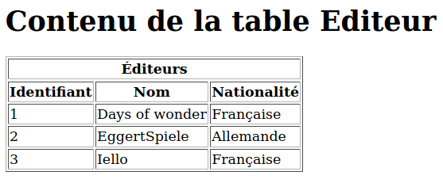

Programmation Web côté serveur et interaction avec une base de données
I. Introduction
L'année dernière, vous avez pu voir la programmation Web côté client avec Javascript. Lorsqu'une application web doit interagir avec une base de données, celle-ci est sur un serveur, donc utiliser de la programmation "côté client" ne convient plus. Il faut donc passer à de la programmation côté serveur.
Le principe général de la programmation web côté serveur est le suivant : lorsqu'une requête http est envoyée, ce n'est pas une page web statique qui est renvoyée, mais une page web générée par un programme. Ce programme peut être écrit dans un langage tel que Python, donc faire tous les calculs imaginables, accéder à une base de données, etc. C'est le serveur web qui fait le lien entre la requête http et le programme.
Les langages les plus utilisés pour faire de la programmation web côté serveur sont PHP et Java. Javascript peut également être utilisé pour faire de la programmation côté serveur. Mais beaucoup d'autres langages le permettent également (C, Ruby, etc.)
Afin d'éviter de vous faire découvrir un langage supplémentaire, nous découvrirons ici la programmation web côté serveur en Python.
II. Création du serveur web
Comme pour toute site web, il faut commencer par disposer d'un serveur web. Pour Python, on crée un serveur web dédié... en Python ainsi (code repris depuis une page web) et le lancer :
#!/usr/bin/python
import http.server
PORT = 8888
server_address = ("", PORT)
server = http.server.HTTPServer
handler = http.server.CGIHTTPRequestHandler
handler.cgi_directories = ["/"]
print("Serveur actif sur le port :", PORT)
httpd = server(server_address, handler)
httpd.serve_forever()
Tant que l'exécution du programme n'est pas interrompue, le serveur web tournera "sur le port 8888". Notez que ceci bloque le terminal dans lequel vous avez lancé le serveur. N'hésitez donc pas à lancer un autre terminal si nécessaire.
N.B.: Si votre script comporte des erreurs, c'est dans le terminal dans lequel est lancé le serveur qu'elles seront affichées. Donc si votre page web ne s'affiche pas, n'hésitez pas à aller jeter un coup d'oeil au terminal dans lequel tourne votre serveur.
III. Création de pages dont le contenu ne dépend pas d'informations fournies par l'utilisateur
A. Page web statique
Pour créer une page web statique, il faut écrire un script Python qui va écrire sur la sortie standard le contenu de la page.
Attention : ce script doit avoir les droits en exécution (sous linux, faire un chmod 755 nomDuScript).
Voici un exemple, stocké dans un fichier essai.py :
#!/usr/bin/python
page= '''<html>
<head>
<title>Essai</title>
</head>
<body>
<h1>Essai</h1>
<p>Voici un exemple de page html.</p>
</body>
</html>'''
print(page)
Pour afficher la page correspondante, il faut taper l'URL suivante dans la barre d'adresse du navigateur :
http://localhost:8888/essai.py
Dans cette adresse :
localhostdésigne la machine courante :888désigne le numéro de port sur lequel le serveur est lancé (voir le fichier serveur.py) ;essai.pydésigne le nom du script dans le répertoire du serveur.
On peut vérifier le code html généré en lançant directement le programme python depuis la ligne de commande.
B. Page web dynamique
Le texte de la page peut également être calculé, comme dans le programme suivant qui affiche la date et l'heure :
#!/usr/bin/python
from datetime import date
from datetime import datetime
debutPage= '''<html>
<head>
<title>Essai</title>
</head>
<body>
<h1>Date et heure</h1>
<p>'''
moment = date.today().strftime("%d/%m/%Y")
heure = datetime.now().strftime("%H:%M:%S")
maintenant = "Nous sommes le " + moment + " et il est " + heure
finPage ='''</p>
</body>
</html>'''
page = debutPage + maintenant + finPage
print(page)
C. Affichage d'informations provenant d'une base de données
Le programme Python générant la page web est un programme Python classique ; il peut donc tout à fait utiliser la bibliothèque sqlite3 pour afficher des informations provenant d'une base de données (présente dans le réperoire du serveur).
À titre d'exemple, voici un exemple de programme renvoyant le contenu de la table Editeur dans une page web (notez la deuxième ligne nécessaire en cas de caractères accentués) :
#!/usr/bin/python
#coding: utf-8
import sqlite3
print("Content-type: text/html; charset=utf-8\n")
print("<html><body>")
conn = sqlite3.connect('ludotheque.db')
curseur = conn.execute("select * from Editeur")
print("<h1>Contenu de la table Editeur</h1>")
print("<table border='1'>")
print("<tr><th colspan='3'>Éditeurs</th></tr>")
print("<tr><th>Identifiant</th><th>Nom</th><th>Nationalité</th></tr>")
for tuple in curseur:
print("<tr>")
liste = list(tuple)
for champ in liste:
print("<td>" + str(champ) + "</td>")
print("</tr>")
print("</table>")
print("</body></html>")
conn.close()
Cela permet d'obtenir la page web suivante :

IV. Traitement d'informations fournies par l'utilisateur
A. Un exemple simple
1. Présentation générale
Via des formulaires, l'utilisateur peut fournir des informations qui pourront être prises en compte par les programmes s'exécutant côté serveur. Voici un premier exemple simple, dont le principe est le suivant :
- Sur une première page, statique, générée par un programme
saisieIdentite.py, l'utilsateur rentre ses nom et prénom. Sur validation, les informations sont transmises à un autre programme,hello.py; - Le script
hello.pygénère une page web saluant l'utilisateur en l'appelant par son prénom et son nom.
2. Programme saisieIdentite.py
Ce programme se contente de générer un formulaire statique permettant à l'utilisateur de saisir ses nom et prénom, puis passe la main au programme hello.py
#!/usr/bin/python
#coding: utf-8
print("Content-type: text/html; charset=utf-8\n")
html = """<html>
<head>
<title>Saisie d'un nom</title>
</head>
<body>
<form action="/hello.py" method="get">
<input type="text" name="nom" placeholder="Votre nom" />
<input type="text" name="prenom" placeholder="Votre prénom" />
<input type="submit" value="Envoyer">
</form>
</body>
</html>
"""
print(html)
3. Programme hello.py
Le programme doit récupérer les informations qui ont été saisies dans le formulaire. Pour ce faire, il faut utiliser le module cgi, et récupérer les valeurs saisies dans le formulaire dans un objet via la méthode FieldStorage. Ensuite, la valeur de chaque champ peut être récupérée grâce à la méthode getvalue. Voilà ce que cela donne :
#!/usr/bin/python
import cgi
formulaire = cgi.FieldStorage()
print("Content-type: text/html; charset=utf-8\n")
nom = formulaire.getvalue('nom')
prenom = formulaire.getvalue('prenom')
print("<html><body><h1>")
print("Bonjour " + prenom + " " + nom)
print("</h1></body></html>")
B. Consultation de la base de données à partir de données fournies par l'utilisateur
Exercice 1 : Maintenant que vous avez tout ce qu'il faut pour, écrivez une application web qui demande à l'utilisateur une nationalité, puis qui affiche la liste des éditeurs ayant la nationalité en question
#!/usr/bin/python
#coding: utf-8
print("Content-type: text/html; charset=utf-8\n")
html = """<html>
<head>
<title>Saisie d'un nationalité</title>
</head>
<body>
<form action="/editeursNation.py" method="get">
<input type="text" name="nation" placeholder="Nationalité recherchée" />
<input type="submit" value="Envoyer">
</form>
</body>
</html>
"""
print(html)
#!/usr/bin/python
#coding: utf-8
import cgi
import sqlite3
print("Content-type: text/html; charset=utf-8\n")
print("<html><body>")
formulaire = cgi.FieldStorage()
nationalite = formulaire.getvalue("nation")
connexion = sqlite3.connect('ludotheque.db')
requete = '''SELECT nomEditeur
FROM Editeur
WHERE upper(nationaliteEditeur) = upper(?)
ORDER BY nomEditeur'''
curseur = connexion.execute(requete, (nationalite,))
print("<h1>Éditeur de nationalité " + nationalite + "</h1>")
print("<table border='1'>")
print("<tr><th>Nom</th></tr>")
for tuple in curseur:
print("<tr>")
nom = list(tuple)[0]
print("<td>" + nom + "</td>")
print("</tr>")
print("</table>")
print("</body></html>")
connexion.close()
Exercice 2 : Écrire une application web qui demande à l'utilisateur le nom d'une table, puis qui affiche le contenu de la table en question.
Indication : l'objet curseur renvoyé par la méthode execute contient un objet description qui contient une description de chacune des colonnes de la table sous la forme d'un tuple dont la première coordonnée est le nom de la colonne. On peut donc récupérer ainsi la liste des noms de colonnes :
[description[0] for description in cursor.description].
#!/usr/bin/python
# coding: utf-8
import cgi
print("Content-type: text/html; charset=utf-8\n")
html = """<html>
<head>
<title>Choix d'une table à afficher</title>
</head>
<body>
<form action="/affichageTable.py" method="get">
<input type="text" name="nomTable" placeholder="Nom de la table" />
<input type="submit" value="Envoyer">
</form>
</body>
</html>
"""
print(html)
#!/usr/bin/python
#coding: utf-8
import cgi
import sqlite3
form = cgi.FieldStorage()
print("Content-type: text/html; charset=utf-8\n")
nomTable = form.getvalue('nomTable')
print("<html><body>")
print("<h1>Informations sur la table " + nomTable + "</h1>"
);
conn = sqlite3.connect('ludotheque.db')
curseur = conn.execute("select * from " + nomTable)
colonnes = [description[0] for description in curseur.description]
print("<h2>Liste des colonnes</h2>")
print("<ul>")
for c in colonnes:
print("<li>" + c + "</li>")
print("</ul>")
print("<h2>Contenu de la table</h2>")
print("<table border='1'>")
print("<tr><th colspan='" + str(len(colonnes)) + "'>" + nomTable + "</th></tr>")
print("<tr>")
for col in colonnes:
print("<th>" + col + "</th>")
print("</tr>")
for tuple in curseur:
print("<tr>")
liste = list(tuple)
for champ in liste:
print("<td>" + str(champ) + "</td>")
print("</tr>")
print("</table>")
print("</body></html>")
conn.close()